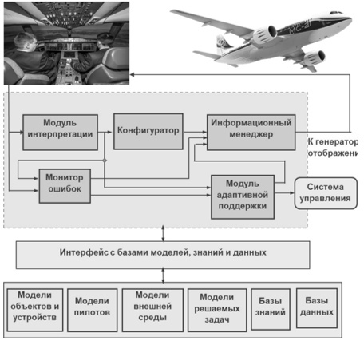
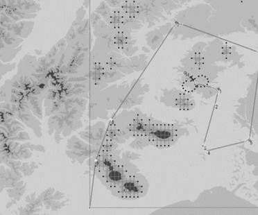

Введение
В последнее десятилетие актуальной проблемой является вопрос о рациональном использовании достижений
научно-технического прогресса в области сложных систем на базе искусственного интеллекта (ИИ), который представляет
собой область науки и инжиниринга, занимающуюся созданием машин и компьютерных программ, позволяющих решать
интеллектуальные задачи моделированием разумного поведения.
Исходя из анализа отечественных и зарубежных публикаций можно выделить ряд направлений использования технологий
искусственного интеллекта (ИИ) в авиационной области:
- Поддержка принятия оперативных решений экипажем, особенно в критических ситуациях, с учетом большого количества
факторов и накопленной информации.
-
Интеллектуальный интерфейс экипажа.
- Сбор, обработка и анализ информации о движении воздушных судов (ВС) и ее применение для систем управления и
организации воздушного движения.
- Увеличение пропускной способности путем оптимизации структуры воздушного пространства, максимально
адаптирующейся под реальные потоки ВС.
- Оптимизация маршрутов полетов ВС в зоне аэропорта.
- Разработка средств обнаружения и предупреждения столкновений между ВС и беспилотными авиационными системами.
- Авиационные компьютерные тренажёрные комплексы.
- Диагностика бортовых узлов и агрегатов (в том числе, в режиме реального времени).
- Автоматизация и автономизация управления.
- Решение боевых задач и др.
Рассмотрим некоторые из этих направлений подробнее.
1 Поддержка принятия оперативных решений экипажем
Одним из важных направлений использования методов ИИ в авиационной области является создание систем поддержки
принятия оперативных решений (СППОР) экипажем. Рекомендации со стороны СППОР могут быть полезны для экипажа по
следующим основным причинам:
- снижение нагрузки на экипаж (пилота), особенно в нештатных ситуациях за счёт увеличения осведомлённости и
получения точной информации в переработанном (укрупнённом и отфильтрованном) виде;
- сокращение времени на принятие решений;
- выполнение функций, которые могут быть затруднительны для экипажа, например, распознавание объектов и их
отслеживание, синтез безопасных траекторий полёта, распознавание в режиме реального времени внешних угроз и
состояния летательного аппарата (ЛА), ранжирование угроз по степени опасности;
- необходимость выполнения больших объёмов вычислений.
Лётчики-исследователи с большим практическим опытом сошлись во мнении, что наибольшее напряжение умственной
деятельности экипажа требуется при оценке воздушной обстановки, планировании действий (поиске оптимального варианта)
и выборе целесообразных тактических приёмов.
Экспертные системы (ЭС) были первыми системами, которые привлекли внимание потенциальных потребителей продукции
ИИ. В авиационной области разрабатывались бортовые оперативносоветующие системы тактического уровня военного
применения. Основная тактическая задача: определение рационального способа достижения оперативно-назначенной цели.
Например, ЭС воздушного боя на борту маневренного ЛА [1].
Входная информация:
- о цели (дальность, скорость, координаты, угловое положение);
-
о собственном ЛА (скорость, координаты, угловое положение, перегрузки, предельные значения параметров полёта);
- о состоянии оружия (минимальная и максимальная дальности пуска выбранных к применению ракет);
- о факте пуска ракет противника;
- о наличии на борту и количестве отстреливаемых пассивных помех.
Решается ряд оптимизационных задач:
- построение оптимальных манёвров уклонения;
-
определение дальностей эффективного пуска ракет;
- оптимальное применение пассивных помех;
- совместное применение манёвров уклонения и пуска ракеты;
- групповое пилотирование.
ЭС продолжает работать и выдавать рекомендации на «реальный» момент времени в соответствии со складывающейся
тактической обстановкой.
В рамках обозначенного направления развиваются исследования и разработки систем-ассистентов экипажа, в частности для
решения задач группового пилотирования, например, сбор группы после выполнения боевого задания [2].
Здесь необходимо отметить, что для создания качественных бортовых СППОР желательно использовать графическую
объектно-ориентированную интегрированную программную среду для разработки и сопровождения приложений реального
времени.
Развитие СППОР показало, что одной из наиболее трудоёмких задач является приобретение знаний, то есть заполнение
базы знаний для описания конкретной предметной области. В связи с этим, на первый план выходит задача
автоматического приобретения знаний – задача машинного обучения, которая решается при помощи глубоких нейронных
сетей и эволюционных вычислений.
2 Интеллектуальный интерфейс экипажа
Цели создания интеллектуального интерфейса экипажа:
- уменьшение эмоциональной и сенсорной нагрузки на экипаж (пилота);
- создание человеко-машинного взаимодействия, похожего на коммуникацию человека с человеком.
Интеллектуальный интерфейс экипажа должен обеспечить:
- наглядное, интегрированное, исчерпывающее, мультимодальное представление информации;
- улучшенное, синтезированное и комбинированное видение, которые очень важны особенно в условиях посадки при
плохой видимости, а также при маловысотном полёте;
- адаптивное к пилоту и решаемой задаче взаимодействие пилота с СППОР, включая и режим диалога;
- голосовое управление;
- распознавание лиц, голоса и жестов для более точной идентификации;
- отслеживание психофизического состояния пилота и его действий.
При улучшенном видении дополнительная информация поступает от множества камер и датчиков, характеризующих внешнюю
среду. Стоит задача объединить эту информацию для удобного представления её пилоту. При синтезированном видении
пилот видит синтезированную упрощенную картину внешней среды вместо сложной реальной обстановки. И, наконец, при
комбинированном видении на реальную картину наносятся синтезированные значки, соответствующие распознаваемой ИИ
информации и даются рекомендации пилоту по управлению на высоком уровне, генерируемые СППОР (или её аналогом).
Кроме отмеченных способов взаимодействия экипажа с СППОР представляет интерес взаимодействие, когда в результате
глубокого анализа состояния систем ЛА, экипажу предлагается та информация, которая является наиболее актуальной в
текущий момент времени.
Также ведутся разработки, так называемого, нейроинтерфейса – нового перспективного направления, при котором
специальная гарнитура контролирует сигналы мозга человека и может вовремя отреагировать, например, на то, что пилот
начал засыпать. Гарнитура замеряет сигналы активности мозга. Мобильное приложение на основе полученных данных
формирует управляющие команды, которые устройство выполняет. Устройство может быть превращено в модуль контроля
психофизического состояния человека. Пока нейроинтерфейсы являются технологией исследовательских групп, но
интенсивно развиваются.
В будущем предполагается создание двухсторонних нейроинтерфейсов, позволяющих не только считывать, но и вводить
искусственную цифровую информацию непосредственно в нервную систему человека. В США в 2017 году объявлено о начале
программы Neural Engineering System Design (NESD) по созданию ИИ военного назначения.

Рисунок 1. Архитектура верхнего уровня интеллектуального интерфейса экипажа
Архитектура верхнего уровня интеллектуального интерфейса экипажа может включать (рис. 1):
- модуль интерпретации, трактующий текущие планы пилота для описания его действий;
- монитор ошибок, определяющий, имеют ли действия или бездействия пилота серьёзные отрицательные последствия в
контексте существующей ситуации;
- конфигуратор, объединяющий сформированные планы и предложения для пилота через информационного менеджера;
- информационный менеджер управляет отображением информации в необходимое время и необходимым образом;
- модуль адаптивной поддержки определяет задачи, которые должны быть выполнены.
3 Подготовка пилотов
Авиационные тренажёры с элементами ИИ превращают тренинг пилотов в полноценное средство приобретения и
закрепления практических навыков безопасного и эффективного управления ЛА. Этот результат достигается за счёт
высококачественной реализации трёх базовых компонентов тренажёрных систем:
- точных динамических моделей процессов управления, обеспечивающих адекватную реакцию моделируемого объекта на
произвольные вмешательства в его ход во всём диапазоне изменения управляющих параметров и внешних возмущений;
- интеллектуальных пользовательских интерфейсов, воспроизводящих реальную управляющую среду;
- компьютерных инструментов инструктирования, позволяющих осуществлять управление процессом тренинга, в том числе
в различных ситуациях отказа техники, и автоматической оценкой состояния и действий пилота.
По мнению экспертов, ИИ позволит пилотам иметь еще более реалистичные симуляции, предоставляя пилотам возможность
наблюдать не только «виртуальную реальность», но и те объекты, которые затруднительно увидеть во время реального
полёта. Тренажер с реализованным ИИ сможет собирать все данные обучения и записывать поведение пилота во время
обучения. Данные, собранные во время обучения, могут использоваться для улучшения автопилотов.
Важную роль играют авиационные тренажёры с элементами ИИ в военной авиации из-за возможности имитации реальной
боевой обстановки практически без ограничений. Акцент при разработке тактических тренажёров авиационных комплексов
делается на необходимость их включения в универсальную учебно-тренировочную систему для решения задач группового
пилотирования, поиска и слежения, радиоэлектронной борьбы и др.
4 Повышение эффективности организации воздушного движения
Перспективными методами ИИ для повышения эффективности организации воздушного движения являются интеллектуальный
анализ больших объемов данных и генетические алгоритмы.
Главным отличием генетического алгоритма от случайного поиска является активное использование накопленной в ходе
итераций информации. Основное достоинство генетических алгоритмов заключается в их «креативности», — за счет
рекомбинации кусков решений могут возникать неожиданно эффективные результаты, которые трудно было бы предсказать. В
качестве одного из недостатков можно говорить о большом объёме вычислений для получения хорошего результата.
Генетические алгоритмы являются универсальным методом оптимизации многопараметрических функций, что позволяет решать
широкий спектр задач:
- повышение эффективности использования взлётно-посадочных полос (ВПП) аэропортов за счёт оптимизации организации
воздушного движения в зоне аэропорта;
-
построение бесконфликтных маршрутов самолётов в концепции воздушного движения «свободный полёт» (Free Flight);
- составление расписаний и др.
Одной из сложных задач оптимизации в зоне аэропорта является задача планирования последовательности и времен посадок
прибывающих самолетов с учётом затухания образующихся вихрей и зон турбулентности. Математическая постановка задачи
формирования оптимальных очередей ВС на посадку как задачи линейной или квадратичной оптимизации (в зависимости от
выбранной целевой функции) является NP-полной. Решению этой задачи посвящено большое число научных работ, обзор
точных и приближенных методов решения этой задачи представлен в обзоре [3- 4], однако главным препятствием для
использования предлагаемых методов на практике в режиме реального времени является неприемлемо большое время счета.
В [5] предложен эвристический алгоритм решения задачи, который не гарантирует оптимального решения задачи, но
позволяет быстро получить приемлемое решение.
Еще одна проблема организации воздушного движения в зоне аэропорта связана с ограниченными возможностями
человека-диспетчера. Путь преодоления этой проблемы лежит в дальнейшем повышении автоматизации управления воздушным
движением, в частности, в автоматическом синтезе траекторий и расчете скоростей движения вдоль траекторий для
точного выполнения заданных временных интервалов между самолетами при заходе на посадку в условиях сложного рельефа
местности [6].
На рис. 2 показаны результаты работы алгоритма построения траектории заданной длины с учётом сложного рельефа
местности при маневрировании самолёта на малых высотах [7], а именно: траектории заданной длины 350 километров в
окрестностях аэропорта Елизово на Камчатке. В результате работы алгоритма генерируются траектории, имеющие длину,
близкую к заданной, не имеющие конфликтов с рельефом и не имеющих острых углов между последовательными отрезками.

Рисунок 2. Пример траектории, сгенерированной при помощи генетического алгоритма
Для проведения имитационного моделирования с целью отработки алгоритмов, предлагаемых для повышения эффективности
организации воздушного движения, создан программный стенд, в рамках которого реализованы следующие основные функции:
- имитация лётной ситуации, при которой возникает конфликт предполагаемой траектории с рельефом;
- генерация вариантов разрешения конфликтов;
- оценка реализуемости и безопасности предлагаемых решений и их ранжирование на основе выполнения виртуальных
полётов с помощью бортовой математической модели движения ЛА [8].
5 Автоматизация и автономизация управления ЛА
В настоящее время основные достижения в области искусственного интеллекта связаны с успехами в разработке методов
обучения глубоких нейронных сетей (ГНС). Эти разработки в будущем дают надежду на полную автоматизацию процесса
управления полетом ЛА.
ГНС в начале в основном предназначались для задач классификации, кластеризации и распознавания образов, но в
дальнейшем развитие данного направления значительно расширило сферу применения нейросетевого подхода, и он начал
применяться, в частности, при реконфигурации систем управления, идентификации нелинейной динамики и адаптивного
управления, генерации изображений и др. Например, с помощью ГНС на борту ЛА могут решаться задачи распознавания
образов: контроль газопроводов, линий электропередач; в военной области – поиск, идентификация военной техники,
определение состояния механических узлов и агрегатов ЛА.
Одна из причин успешного применения ГНС заключается в том, что сеть автоматически выделяет из данных важные
признаки, необходимые для решения задачи. Сочетание трёх факторов привело к существенному прогрессу в обучении ГНС и
их практическом использовании, что позволило ГНС занять лидирующую позицию среди методов машинного обучения.
Во-первых, произошло существенное увеличение производительности компьютеров, что позволило обучать весьма сложные
нейросети значительно быстрее и с более высокой точностью.
Во-вторых, был накоплен большой объём данных, который необходим для обучения ГНС. При обработке больших объёмов
данных нейронная сеть справляется с выделением признаков часто лучше, чем человек.
В-третьих, разработаны методы обучения нейронных сетей, позволяющих быстро и качественно обучать сети, состоящие
из ста и более слоёв, что раньше было невозможно.
В проекте компании McDonnell Aircraft нейронные сети использованы для идентификации в реальном времени параметров
управления самолётом F-15. На имитационном стенде вводились различные повреждения секций крыла и управляющих
плоскостей. Нейронная сеть оказывалась в состоянии для режима различных манёвров быстро определять стабилизирующие
управления. Аналогично компьютерное моделирование истребителя F/A-18 выполнено в компании Lockheed с эффективным
использованием нейронных сетей для обнаружения отказов в управляющих органах и адаптивного управления самолётом.
Агентство перспективных оборонных разработок (DARPA) в 2019 году провело первый этап испытаний нейросетевых
алгоритмов управления виртуальным воздушным боем. В виртуальной среде соревновались программы, разработанные разными
компаниями: Aurora Flight Sciences, EpiSCI, Heron Systems, Lockheed Martin, Perspecta Labs, physicsAI, SoarTech, а
также с Исследовательским институтом технологий Джорджии. Испытания проводятся в рамках разработки системы ИИ,
которая в будущем сможет брать управление боевым самолетом на себя и вести маневренный ближний воздушный бой.
Корпорация Boeing запланировала тестирование автономного пассажирского самолета; корпорация Airbus начинает
разработку самолета с одним пилотом, второго пилота планируется заменить на ИИ. Следующий этап – полностью
автономный ЛА.
Заключение
Выделим ряд факторов, замедляющих применение ИИ на борту ЛА.
- Не всегда удаётся получить объяснение предлагаемого решения. До тех пор, пока у разработчиков не будет чёткого
понимания, как именно системы ИИ принимают решения и почему конкретно эти решения ими принимаются, говорить о
сертификации для их использования на пассажирских самолётах проблематично.
- Большое количество возможных нештатных ситуаций.
- Необходимость учитывать человека в системе принятия оперативных решений.
- Повышенные требования к безопасности.
- Трудности поиска причины сбоя из-за обработки большого объёма данных. По мнению специалистов, в современных
системах с элементами ИИ при возникновении каких-либо ошибок в их работе найти причину сбоя достаточно сложно
(иногда невозможно).
- Исследователи нейронных сетей столкнулись с проблемой уязвимости нейронных сетей, что может привести к серьёзным
ошибкам распознавания.
Список использованных источников
-
Федунов Б.Е. Бортовая оперативно советующая экспертная система типовой боевой ситуации "Ввод группы в воздушный
бой" // Информационно-измерительные и управляющие системы. Т. 4. 2006, № 8. – С. 91-99.
-
Лебедев В.Г. Система-ассистент экипажа перспективного летательного аппарата // Тр. ИПУ РАН. Т. 26. 2005. – С.
39-46.
-
Вересников Г.С., Егоров Н.А., Кулида Е.Л., Лебедев В.Г. Методы построения оптимальных очередей воздушных судов на
посадку. Ч. 1. Методы точного решения // Проблемы управления. 2018, № 4. – С. 2-13.
-
Вересников Г.С., Егоров Н.А., Кулида Е.Л., Лебедев В.Г. Методы построения оптимальных очередей воздушных судов на
посадку. Ч. 2. Методы приближенного решения // Проблемы управления. 2018, № 5. – С. 2-13.
-
Кулида Е.Л., Лебедев В.Г., Егоров Н.А. Исследование эффективности алгоритма оптимизации потока воздушных судов на
посадку // Проблемы управления. 2019, № 6. – С. 63-69.
-
Кулида Е.Л., Баженов С.Г., Лебедев В.Г., Егоров Н.А. Управление траекторией и скоростью самолета при заходе на
посадку в условиях пересеченной местности // Проблемы управления. 2015, № 2. – С. 45-51.
-
Кулида Е.Л., Лебедев В.Г. Генерация траекторий заданной длины при предпосадочном маневрировании воздушного судна в
условиях сложного рельефа местности // Проблемы управления. 2017, № 4. – С. 59-64.
-
Алешин Б.С., Баженов С.Г., Лебедев В.Г., Кулида Е.Л. Использование бортовой математической модели для оценки
реализуемости и безопасности траекторий самолета // Проблемы управления. 2013, № 4. – С. 64-71.